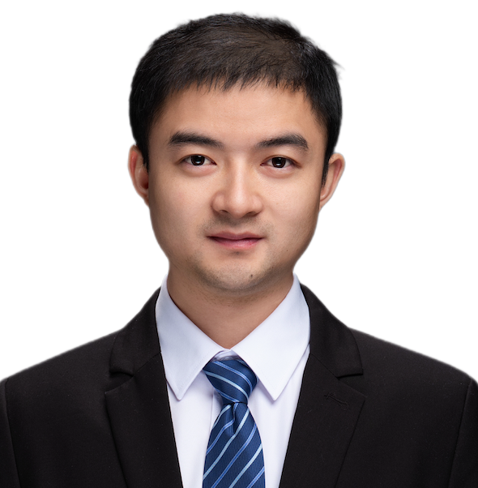

|
Libo Huang
Assistant Researcher,
Institute of Computing Technology (ICT),
Chinese Academic of Sciences (CAS),
No. 6 Kexueyuan South Road,
Haidian District,
Beijing, China.
Email: www.huanglibo(at)gmail.com, huanglibo(at)ict.ac.cn
|

|
About Me
Libo Huang is an assistant researcher at Chinese Academy of Sciences (CAS) in China. Before that, he worked as a postdoctoral researcher (2021.10 - 2024.8) and intern researcher (2021.7-2021.10) at CAS, collaborated with Prof. Yongjun Xu and Prof. Zhulin An, working on deep learning.
He got his Ph.D. degree (2018-2021) of machine learning under the supervisions of Prof. Wing-Kuen Ling at Guangdong University of Technology (GDUT), and Dr. Lu Gan at Brunel University London (2019-2020).
Before that, he persured his M.Eng. degree (2016-2018) in Computer Scicence from GDUT, supervised by Prof. Zhifeng Hao, Prof. Ruichu Cai, and Prof. Wen Wen. He received a B.S. degree (2012-2016) in Mathematics from Jiangxi Normal Unversity (JXNU).
Research Interests
My research interests are broad, including the machine learning theories and deep learning applications. Especially, I have done some works in the following topics:
-
Machine learning, especially unsupervised clustering, feature extracture, and optimization.
-
Deep learning, especially deep models' memorzing, etc.
Recruiting: I have several 1-2 openings for visiting (bachelor, master, or Ph.D.) students on machine learning, deep learning, and optimization topics. Both remote and onsite visitings are welcome. Drop me an email if you are interested!
Publications
-
A survey on causal reinforcement learning
Yan Zeng, Ruichu Cai, Fuchun Sun, Libo Huang, Zhifeng Hao.
TNNLS, 2024.
-
KFC: Knowledge Reconstruction and Feedback Consolidation Enable Efficient and Effective Continual Generative Learning
Libo Huang, Zhulin An, Yan Zeng, Yongjun Xu.
ICLR (Tiny paper), Vienna, Austria, 2024.
-
e-Tag: Class-Incremental Learning with Hierarchical Embedding Distillation and Task-Oriented Generation
Libo Huang, Yan Zeng, Chuanguang Yang, Zhulin An, Yongjun Xu.
AAAI, Washington, DC, USA, 2023.
-
Automatic Spike Sorting with Low-Rank and Sparse Representation
Libo Huang, Gan Lu, Yan Zeng, and Wing-Kuen Ling.
IEEE Transactions on Biomedical Engineering, 2023.
-
Nonlinear Causal Discovery with Multiple High-Dimensional Observations
Yan Zeng, Zhifeng Hao, Ruichu Cai, Feng Xie, Libo Huang, Shohei Shimizu.
TNNLS, 2021.
-
Spike Sorting Based On Low-Rank And Sparse Representation
Libo Huang, Wing-Kuen Ling, Yan Zeng.
ICME, 2020: 1-6.
-
WMsorting: wavelet packets’ decomposition and mutual information-based spike sorting method
Libo Huang, Wing-Kuen Ling, Ruichu Cai, Yan Zeng.
IEEE transactions on nanobioscience, 2019, 18(3): 283-295.
* denotes equal contribution; # indicates corresponding author.
Academic Services
-
PC: NeurIPS 2024, ECCV 2024, ICDE 2024, ICME 2024, ACMMM 2023-2024.
-
Reviewer: TCE (IEEE Transactions on Consumer Electronics), TCSVT (IEEE Transactions on Circuits and Systems for Video Technology), The Innovation, IEEE TIP (IEEE Transactions on Image Processing), IEEE SPL (IEEE Signal Processing letters).
libo-huang@2024 Total Visitors: